library(survival)
library(tibble)Cox Regression (low-dim)
From 1962 to 1969 a number of patients with liver cirrhosis at several hospitals in Copenhagen were included in a randomized clinical trial. The purpose of the study was to investigate whether patients treated with the hormone prednisone had a better survival than patients who got an inactive placebo treatment. In this exercise, we will restrict attention to the \(386\) patients in the study who had no excess fluid in the abdomen at entry. (Source: Andersen, Borgan, Gill & Keiding, Springer, 1993.)
We will study the effect of treatment with prednisone. We will also investigate the effect on survival of the covariates sex, age, and prothrombin index (a measurement based on a blood test of some coagulation factors produced by the liver, in percent of the normal value).
You may read the data into R by the command:
liver = read.table("https://www.med.uio.no/imb/english/research/centres/ocbe/courses/imb9335/liver.txt", header=T) %>% as_tibble()
liver# A tibble: 386 × 6
status time treat sex age prot
<int> <int> <int> <int> <int> <int>
1 0 22 0 0 75 94
2 0 24 0 0 53 26
3 0 24 1 0 76 43
4 0 25 0 1 46 100
5 1 27 0 1 76 71
6 0 29 0 1 51 68
7 0 30 1 1 49 72
8 0 30 0 1 36 84
9 0 30 1 1 54 60
10 1 33 1 0 60 100
# ℹ 376 more rowsThe data are organized with one line for each of the \(386\) patients, and with the following variables in the six columns:
- status: indicator for death/censoring (1=dead; 0=censored)
- time: time in days from start of treatment to death/censoring
- treat: treatment (0=prednisone; 1=placebo)
- sex: gender (0=female; 1=male)
- age: age in years at start of treatment
- prot: prothrombin index
To get an overview of the data, we will first do univariate analyses of the effects of the covariates treatment, sex, age and prothrombin index using Kaplan-Meier plots and the log-rank tests.
For treatment, you may give the commands (when time is converted to years).
fit.treat = survfit(Surv(time/365.25, status) ~ factor(treat), data = liver)
plot(fit.treat, mark.time=FALSE, xlab="Years after randomization", lty=1:2, main="KM - Treatment")
legend("bottomleft",c("Prednisone","Placebo"),lty=1:2)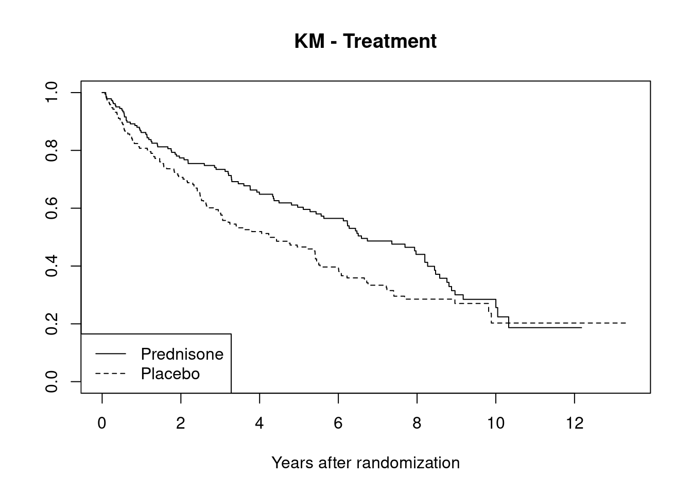
survdiff(Surv(time/365.25,status) ~ factor(treat), data=liver)Call:
survdiff(formula = Surv(time/365.25, status) ~ factor(treat),
data = liver)
N Observed Expected (O-E)^2/E (O-E)^2/V
factor(treat)=0 191 94 111 2.56 5.42
factor(treat)=1 195 117 100 2.83 5.42
Chisq= 5.4 on 1 degrees of freedom, p= 0.02 Perform the commands and interpret the results.
Perform similar analyses as in a) for the covariate sex.
fit.sex = survfit(Surv(time/365.25, status) ~ factor(sex), data = liver)
plot(fit.sex, mark.time=FALSE, xlab="Years after randomization", lty=1:2, main="KM - Sex")
legend("bottomleft", c("Female","Male"), lty=1:2)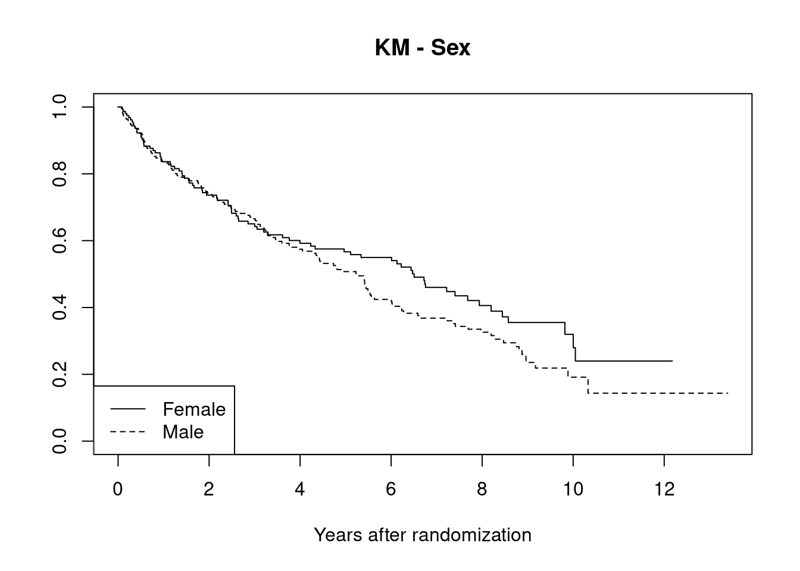
survdiff(formula = Surv(time/365.25, status) ~ factor(sex), data = liver)Call:
survdiff(formula = Surv(time/365.25, status) ~ factor(sex), data = liver)
N Observed Expected (O-E)^2/E (O-E)^2/V
factor(sex)=0 159 81 91.8 1.268 2.25
factor(sex)=1 227 130 119.2 0.977 2.25
Chisq= 2.3 on 1 degrees of freedom, p= 0.1 We want to do similar analyses as in a) and b) for the numeric covariates age and prothrombin index. But then we first have to make a grouping based on these covariates. In order to group age into the groups: 49 years or less, 50-59 years, 60-69 years, and 70 years or more, you may create a new categorial covariate agegroup by the command:
liver$agegroup=cut(liver$age, breaks=c(0,49,59,69,100),labels=1:4)
unique(liver$agegroup)[1] 4 2 1 3
Levels: 1 2 3 4- Make a grouping of age by the command given above, and perform similar analyses for age group as the ones in a) and b).
fit.ageg = survfit(Surv(time/365.25, status) ~ factor(agegroup), data = liver)
plot(fit.ageg, mark.time=FALSE, xlab="Years after randomization", lty=1:4, main="KM - Age group", col = 1:4)
legend("bottomleft", c("0-49","50-59", "60-69", "70-100"), lty=1:4, col = 1:4)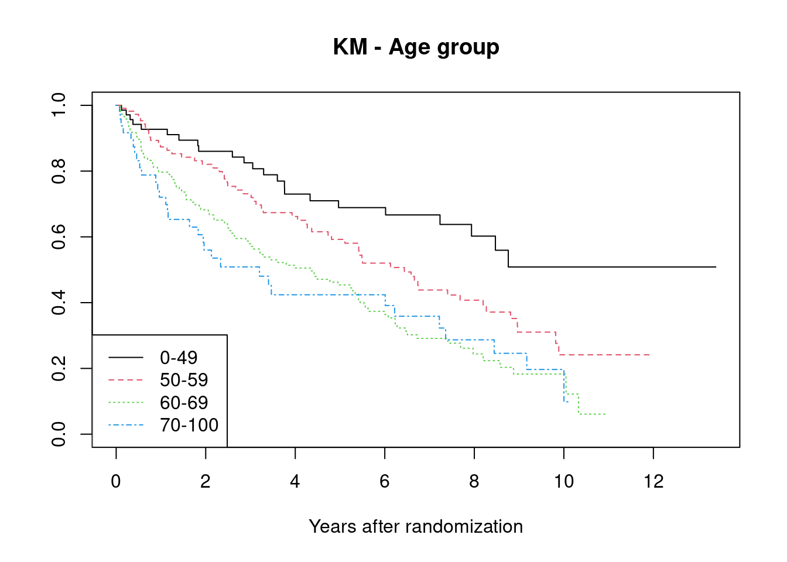
# factor() doesn't play a role here => in Cox regression it does!
survdiff(formula = Surv(time/365.25, status) ~ factor(agegroup), data = liver)Call:
survdiff(formula = Surv(time/365.25, status) ~ factor(agegroup),
data = liver)
N Observed Expected (O-E)^2/E (O-E)^2/V
factor(agegroup)=1 74 23 46.4 11.78 15.16
factor(agegroup)=2 116 59 69.4 1.55 2.33
factor(agegroup)=3 146 97 73.2 7.78 12.05
factor(agegroup)=4 50 32 22.1 4.44 4.98
Chisq= 25.8 on 3 degrees of freedom, p= 1e-05 - Make an appropriate grouping of prothrombin index and do similar analyses for grouped prothrombin as in a), b) and c).
quantile(liver$prot) 0% 25% 50% 75% 100%
26 58 72 90 135 summary(liver$prot) Min. 1st Qu. Median Mean 3rd Qu. Max.
26.00 58.00 72.00 73.55 90.00 135.00 liver$protgroup = cut(liver$prot, breaks=c(0,58,90,135),labels=1:3)
unique(liver$protgroup)[1] 3 1 2
Levels: 1 2 3fit.protg = survfit(Surv(time/365.25, status) ~ factor(protgroup), data = liver)
plot(fit.protg, mark.time=FALSE, xlab="Years after randomization", lty=1:3, main="KM - Protgroup", col = 1:3)
legend("bottomleft", c("0-58","59-90", "91-135"), lty=1:3, col = 1:3)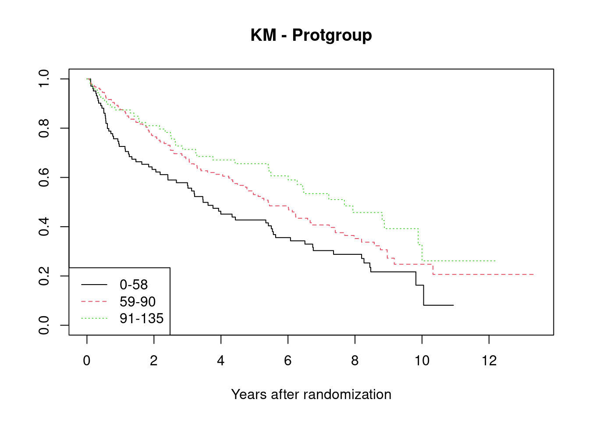
- Higher prot-index is better!!!
survdiff(formula = Surv(time/365.25, status) ~ factor(protgroup), data = liver)Call:
survdiff(formula = Surv(time/365.25, status) ~ factor(protgroup),
data = liver)
N Observed Expected (O-E)^2/E (O-E)^2/V
factor(protgroup)=1 104 71 52.8 6.285 8.407
factor(protgroup)=2 190 99 102.8 0.137 0.268
factor(protgroup)=3 92 41 55.5 3.769 5.127
Chisq= 10.2 on 2 degrees of freedom, p= 0.006 In order to study jointly the effects the covariates, we fit a Cox regression model with all covariates. If we use age and prothrombin as numeric covariates, we may give the commands:
cox.fit = coxph(Surv(time/365.25, status) ~ factor(treat) + factor(sex) + age + prot, data = liver)
summary(cox.fit)Call:
coxph(formula = Surv(time/365.25, status) ~ factor(treat) + factor(sex) +
age + prot, data = liver)
n= 386, number of events= 211
coef exp(coef) se(coef) z Pr(>|z|)
factor(treat)1 0.292844 1.340233 0.139504 2.099 0.03580 *
factor(sex)1 0.382945 1.466597 0.145403 2.634 0.00845 **
age 0.046925 1.048043 0.008038 5.838 5.28e-09 ***
prot -0.010607 0.989449 0.003351 -3.165 0.00155 **
---
Signif. codes: 0 '***' 0.001 '**' 0.01 '*' 0.05 '.' 0.1 ' ' 1
exp(coef) exp(-coef) lower .95 upper .95
factor(treat)1 1.3402 0.7461 1.020 1.762
factor(sex)1 1.4666 0.6819 1.103 1.950
age 1.0480 0.9542 1.032 1.065
prot 0.9894 1.0107 0.983 0.996
Concordance= 0.65 (se = 0.021 )
Likelihood ratio test= 53.44 on 4 df, p=7e-11
Wald test = 50.36 on 4 df, p=3e-10
Score (logrank) test = 50.44 on 4 df, p=3e-10- Treat = 1 (placebo) or sex = 1 (male) or higher age is worse (HR = exp(coef) > 1) given that all the other covariates remain the same
- Also smaller prot is worse (but not too much, also the same for age)
Perform the commands, and interpret the estimated hazard ratios.
Do you think that it is reasonable to use both age and prothrombin index as numeric covariates in the Cox regression model? If not, also fit model(s) where you use the grouped version of one or both of these covariates. Interpret the estimated hazard ratios.
cox.fit2 = coxph(Surv(time/365.25, status) ~ factor(treat) + factor(sex) + agegroup + protgroup, data = liver)
summary(cox.fit2)Call:
coxph(formula = Surv(time/365.25, status) ~ factor(treat) + factor(sex) +
agegroup + protgroup, data = liver)
n= 386, number of events= 211
coef exp(coef) se(coef) z Pr(>|z|)
factor(treat)1 0.3267 1.3863 0.1406 2.324 0.020151 *
factor(sex)1 0.3211 1.3787 0.1443 2.225 0.026057 *
agegroup2 0.4852 1.6245 0.2468 1.966 0.049307 *
agegroup3 1.0176 2.7665 0.2333 4.362 1.29e-05 ***
agegroup4 1.0624 2.8933 0.2758 3.852 0.000117 ***
protgroup2 -0.3518 0.7034 0.1583 -2.223 0.026249 *
protgroup3 -0.5966 0.5507 0.1972 -3.025 0.002489 **
---
Signif. codes: 0 '***' 0.001 '**' 0.01 '*' 0.05 '.' 0.1 ' ' 1
exp(coef) exp(-coef) lower .95 upper .95
factor(treat)1 1.3863 0.7213 1.0524 1.8261
factor(sex)1 1.3787 0.7253 1.0390 1.8294
agegroup2 1.6245 0.6156 1.0015 2.6351
agegroup3 2.7665 0.3615 1.7514 4.3701
agegroup4 2.8933 0.3456 1.6851 4.9679
protgroup2 0.7034 1.4216 0.5158 0.9593
protgroup3 0.5507 1.8160 0.3741 0.8106
Concordance= 0.645 (se = 0.02 )
Likelihood ratio test= 46.95 on 7 df, p=6e-08
Wald test = 43.47 on 7 df, p=3e-07
Score (logrank) test = 44.97 on 7 df, p=1e-07This exercise is a continuation of the exercise on Cox regression for the liver cirrhosis data from yesterday. The liver cirrhosis data are described in the exercise from yesterday. There it is also explained how you may read the data into R.
We first fit a Cox regression model with all four covariates by the commands:
cox.fit=coxph(Surv(time/365.25,status)~factor(treat)+factor(sex)+age+prot,data=liver)
summary(cox.fit)Call:
coxph(formula = Surv(time/365.25, status) ~ factor(treat) + factor(sex) +
age + prot, data = liver)
n= 386, number of events= 211
coef exp(coef) se(coef) z Pr(>|z|)
factor(treat)1 0.292844 1.340233 0.139504 2.099 0.03580 *
factor(sex)1 0.382945 1.466597 0.145403 2.634 0.00845 **
age 0.046925 1.048043 0.008038 5.838 5.28e-09 ***
prot -0.010607 0.989449 0.003351 -3.165 0.00155 **
---
Signif. codes: 0 '***' 0.001 '**' 0.01 '*' 0.05 '.' 0.1 ' ' 1
exp(coef) exp(-coef) lower .95 upper .95
factor(treat)1 1.3402 0.7461 1.020 1.762
factor(sex)1 1.4666 0.6819 1.103 1.950
age 1.0480 0.9542 1.032 1.065
prot 0.9894 1.0107 0.983 0.996
Concordance= 0.65 (se = 0.021 )
Likelihood ratio test= 53.44 on 4 df, p=7e-11
Wald test = 50.36 on 4 df, p=3e-10
Score (logrank) test = 50.44 on 4 df, p=3e-10- Discuss the assumptions of the model fitted above.
CHECK CONTINUOUS VARIABLES LOG-LINEARITY ASSUMPTION:
- Investigate if there is a log-linear effect of age, we may give the commands:
cox.spage=coxph(Surv(time/365.25,status)~factor(treat)+factor(sex)+pspline(age)+prot,data=liver)
print(cox.spage)Call:
coxph(formula = Surv(time/365.25, status) ~ factor(treat) + factor(sex) +
pspline(age) + prot, data = liver)
coef se(coef) se2 Chisq DF p
factor(treat)1 0.29335 0.14085 0.14049 4.33754 1.00 0.0373
factor(sex)1 0.37413 0.14599 0.14595 6.56715 1.00 0.0104
pspline(age), linear 0.04689 0.00820 0.00820 32.71358 1.00 1.1e-08
pspline(age), nonlin 1.66153 3.09 0.6609
prot -0.01081 0.00337 0.00337 10.26994 1.00 0.0014
Iterations: 4 outer, 12 Newton-Raphson
Theta= 0.802
Degrees of freedom for terms= 1.0 1.0 4.1 1.0
Likelihood ratio test=56.1 on 7.08 df, p=1e-09
n= 386, number of events= 211 termplot(cox.spage,se=T,terms=3)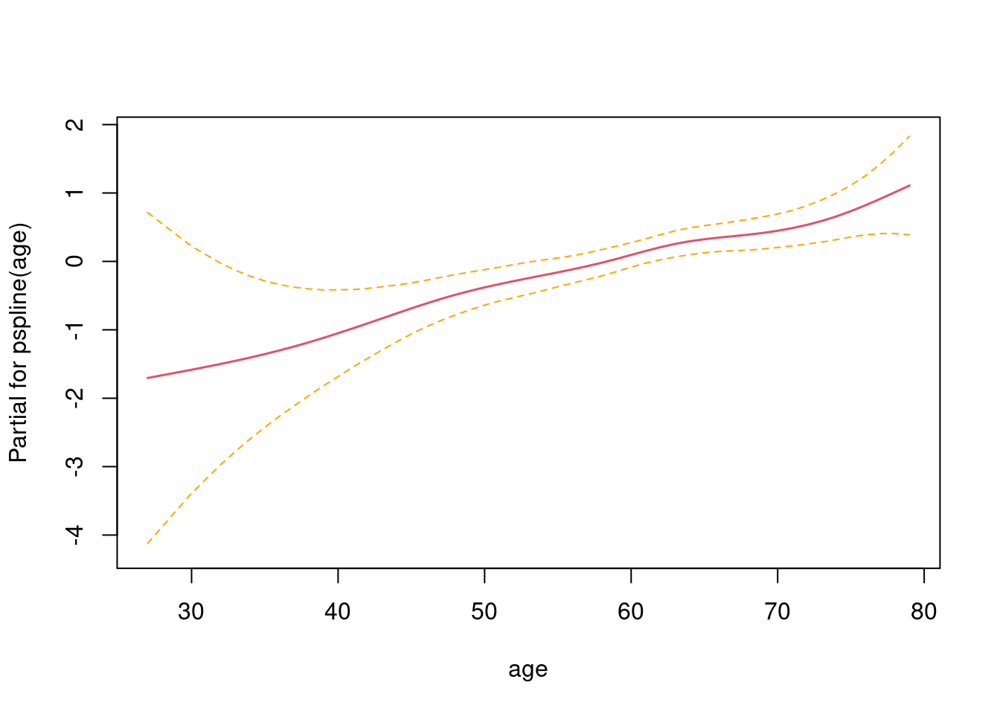
Discuss if it is reasonable to assume a log-linear effect of age? => No => plot is linear
- Investigate if there is a log-linear effect of prothrombin index.
cox.spprot=coxph(Surv(time/365.25,status)~factor(treat)+factor(sex)+age+pspline(prot),data=liver)
print(cox.spprot)Call:
coxph(formula = Surv(time/365.25, status) ~ factor(treat) + factor(sex) +
age + pspline(prot), data = liver)
coef se(coef) se2 Chisq DF p
factor(treat)1 0.31796 0.14161 0.14126 5.04114 1.00 0.0248
factor(sex)1 0.41439 0.14879 0.14846 7.75624 1.00 0.0054
age 0.04749 0.00811 0.00808 34.33445 1.00 4.6e-09
pspline(prot), linear -0.01031 0.00317 0.00317 10.60438 1.00 0.0011
pspline(prot), nonlin 3.66752 3.05 0.3077
Iterations: 5 outer, 14 Newton-Raphson
Theta= 0.855
Degrees of freedom for terms= 1.0 1.0 1.0 4.1
Likelihood ratio test=57.7 on 7.04 df, p=5e-10
n= 386, number of events= 211 termplot(cox.spprot,se=T,terms=4)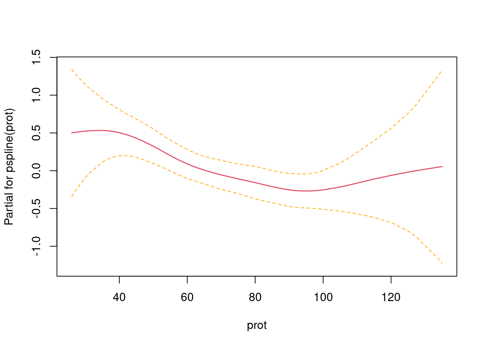
The result above gives some indication (but not very clear!) that the effect of prothrombin index is not log-linear. In the remainder of this exercise, we will work with prothrombin grouped in the three groups: (i) prothrombin index 49 or below, (ii) prothrombin index 50-89, and (iii) prothrombin index 90 or above. We may create a new categorial covariate protgroup by the command:
liver$protgroup=cut(liver$prot, breaks=c(0,49,89,150),labels=1:3)We may fit a Cox model with this variable (together with the other three covariates) by the commands
cox.grfit=coxph(Surv(time/365.25,status)~factor(treat)+factor(sex)+age+factor(protgroup),data=liver)
summary(cox.grfit)Call:
coxph(formula = Surv(time/365.25, status) ~ factor(treat) + factor(sex) +
age + factor(protgroup), data = liver)
n= 386, number of events= 211
coef exp(coef) se(coef) z Pr(>|z|)
factor(treat)1 0.289942 1.336351 0.139747 2.075 0.038008 *
factor(sex)1 0.413701 1.512405 0.147978 2.796 0.005179 **
age 0.047641 1.048794 0.008003 5.953 2.63e-09 ***
factor(protgroup)2 -0.578836 0.560550 0.182306 -3.175 0.001498 **
factor(protgroup)3 -0.781223 0.457846 0.211930 -3.686 0.000228 ***
---
Signif. codes: 0 '***' 0.001 '**' 0.01 '*' 0.05 '.' 0.1 ' ' 1
exp(coef) exp(-coef) lower .95 upper .95
factor(treat)1 1.3364 0.7483 1.0162 1.7574
factor(sex)1 1.5124 0.6612 1.1316 2.0213
age 1.0488 0.9535 1.0325 1.0654
factor(protgroup)2 0.5606 1.7840 0.3921 0.8013
factor(protgroup)3 0.4578 2.1841 0.3022 0.6936
Concordance= 0.654 (se = 0.021 )
Likelihood ratio test= 56.69 on 5 df, p=6e-11
Wald test = 55.11 on 5 df, p=1e-10
Score (logrank) test = 55.75 on 5 df, p=9e-11Check if the assumption of proportional hazards seems to be fulfilled for the model: a non-significant p-value means PH is okay/satisfied, since \(H_0 = (slope = 0)\), i.e. PH means that the time-dependent plot should approximately be a straight line:
phres = cox.zph(cox.grfit, terms = FALSE)
phres chisq df p
factor(treat)1 0.892 1 0.34
factor(sex)1 1.653 1 0.20
age 0.264 1 0.61
factor(protgroup)2 1.372 1 0.24
factor(protgroup)3 0.228 1 0.63
GLOBAL 3.836 5 0.57plot(phres)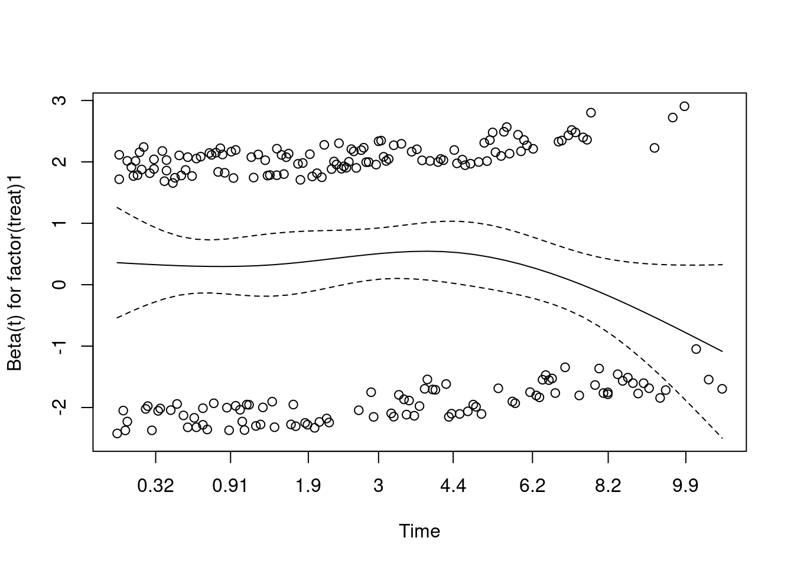
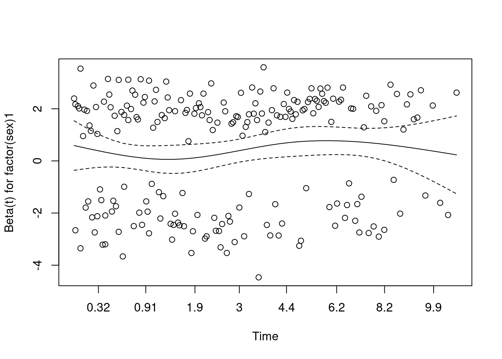
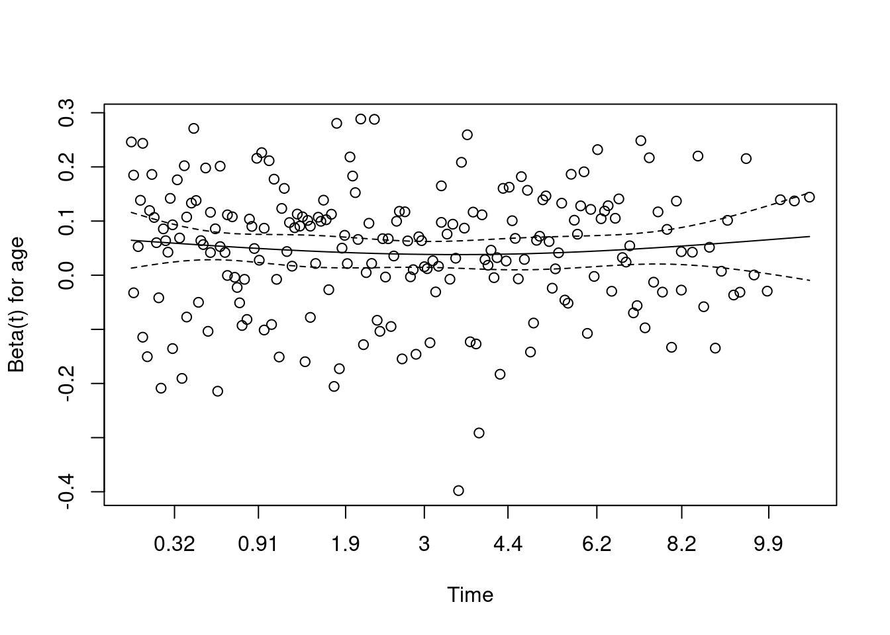
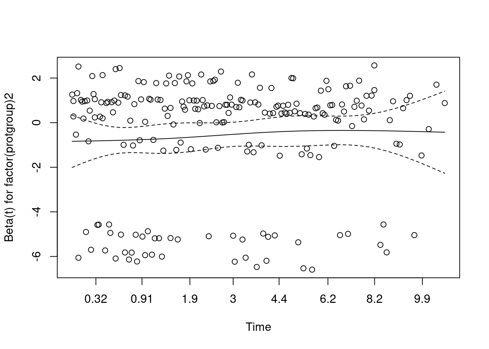
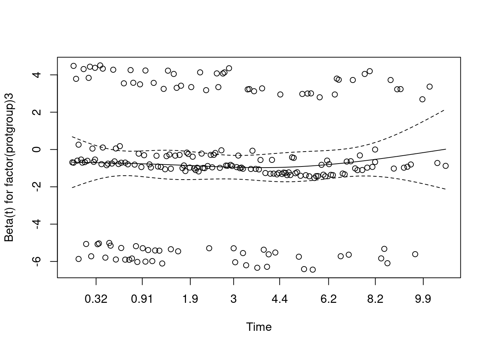
Check this dependence with time: \(b_1\) \(b_1+b_{12}\times log(t)\)
phres = cox.zph(cox.grfit, transform = 'log', terms = FALSE)
phres chisq df p
factor(treat)1 0.240 1 0.62
factor(sex)1 1.006 1 0.32
age 0.593 1 0.44
factor(protgroup)2 1.406 1 0.24
factor(protgroup)3 0.660 1 0.42
GLOBAL 2.738 5 0.74plot(phres)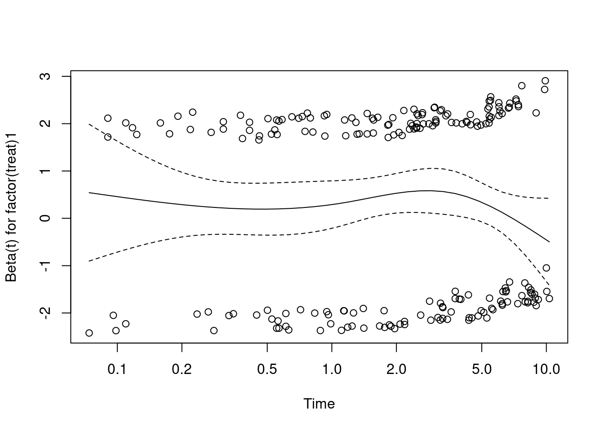
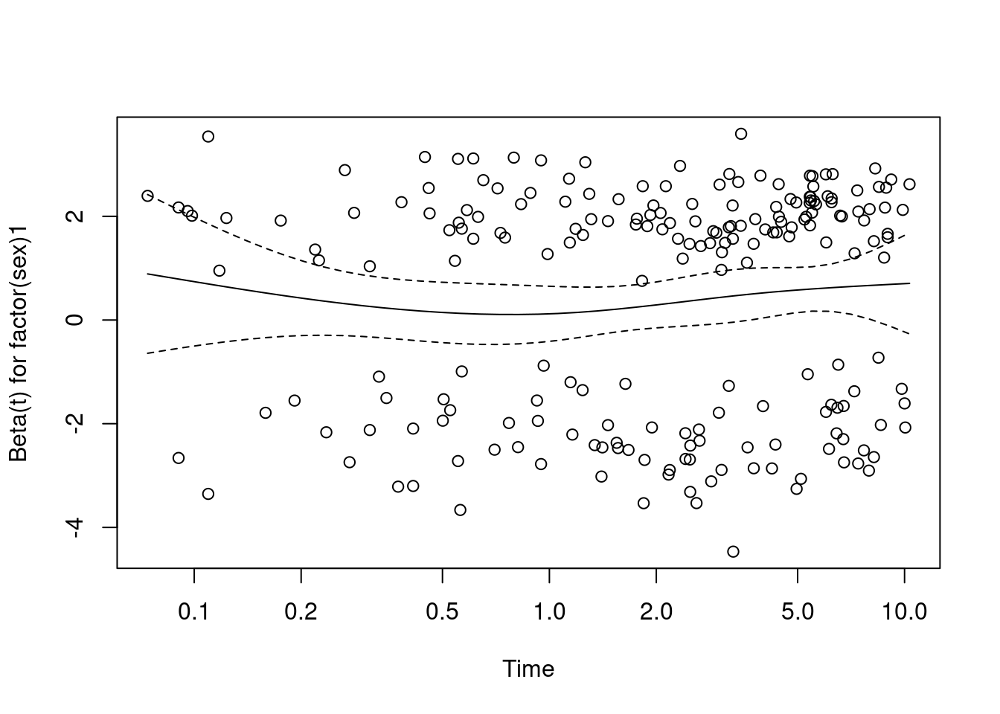
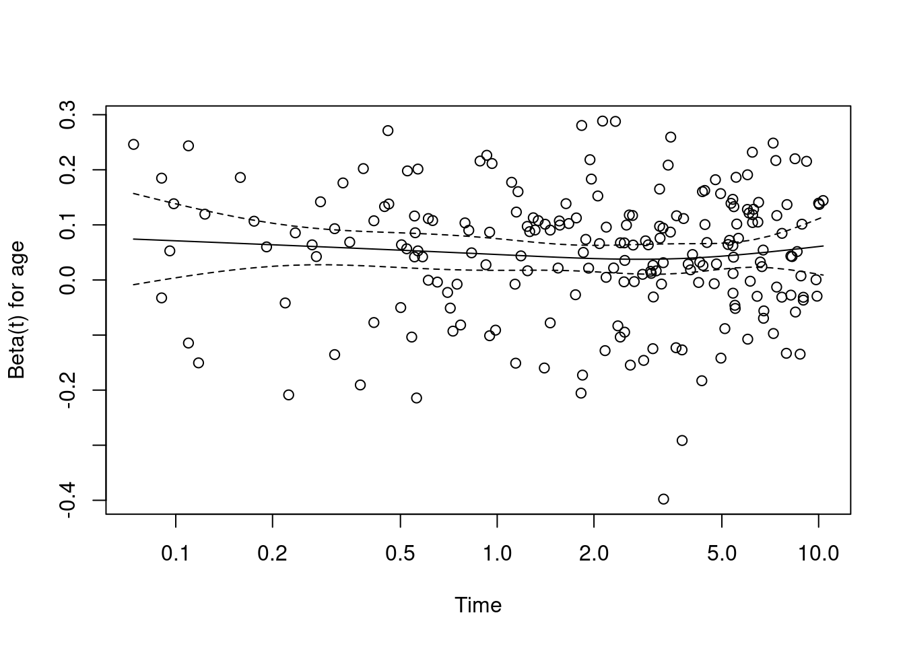
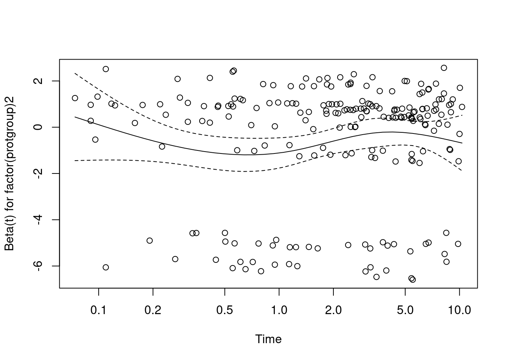
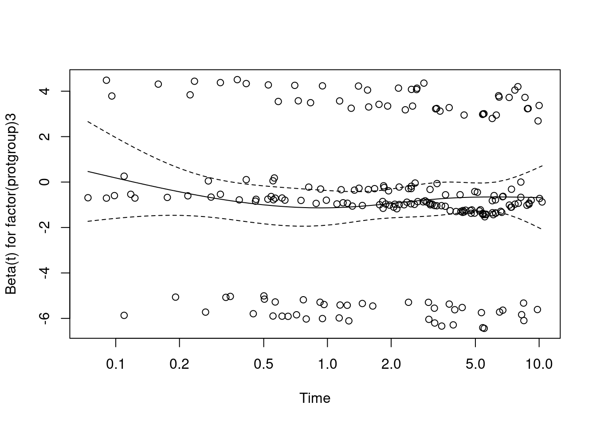
Predicting survival curves for new patients:
- A prednisone treated woman aged 60 years who has prothrombin index 90 or above
- A prednisone treated woman aged 60 years who has prothrombin index 49 or below
- A placebo treated man aged 60 years who has prothrombin index 90 or above
- A placebo treated man aged 60 years who has prothrombin index 49 or below
newdata = data.frame(
sex = c(0,0,1,1),
treat = c(0,0,1,1),
age = rep(60, 4),
protgroup = c(3,1,3,1))
newdata sex treat age protgroup
1 0 0 60 3
2 0 0 60 1
3 1 1 60 3
4 1 1 60 1surv.res = survfit(cox.grfit, newdata = newdata)
plot(surv.res, fun="cumhaz", mark.time=FALSE, xlim=c(0,10),
xlab="Years since operation", ylab="Cumulative hazard", lty=1:4, lwd=2, col = 1:4)
legend("topleft",c("female, treated, 60y, progr = 3","female, treated, 60y, protgr = 1",
"male, placebo, 60y, progr = 3","female, placebo, 60y, protgr = 1"), lty=1:4,lwd=2, col = 1:4)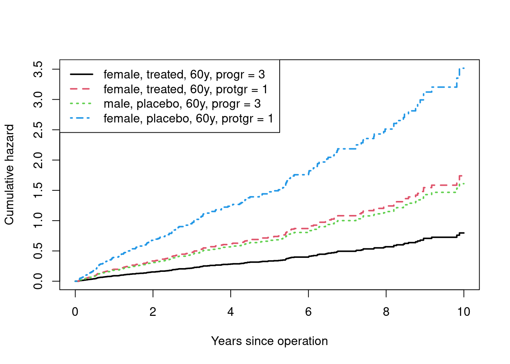
plot(surv.res, fun="surv", mark.time=FALSE, xlim=c(0,10),
xlab="Years since operation", ylab="Survival Probability", lty=1:4, lwd=2, col = 1:4)
legend("topleft",c("female, treated, 60y, progr = 3","female, treated, 60y, protgr = 1",
"male, placebo, 60y, progr = 3","female, placebo, 60y, protgr = 1"), lty=1:4,lwd=2, col = 1:4)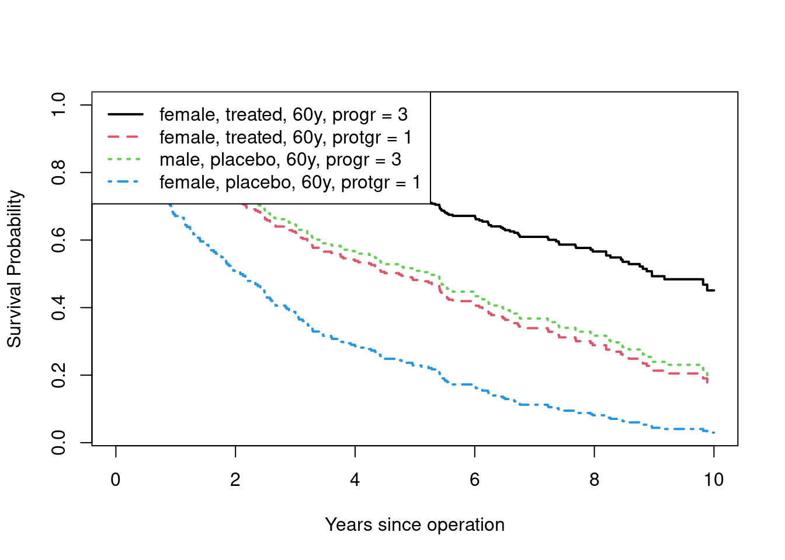